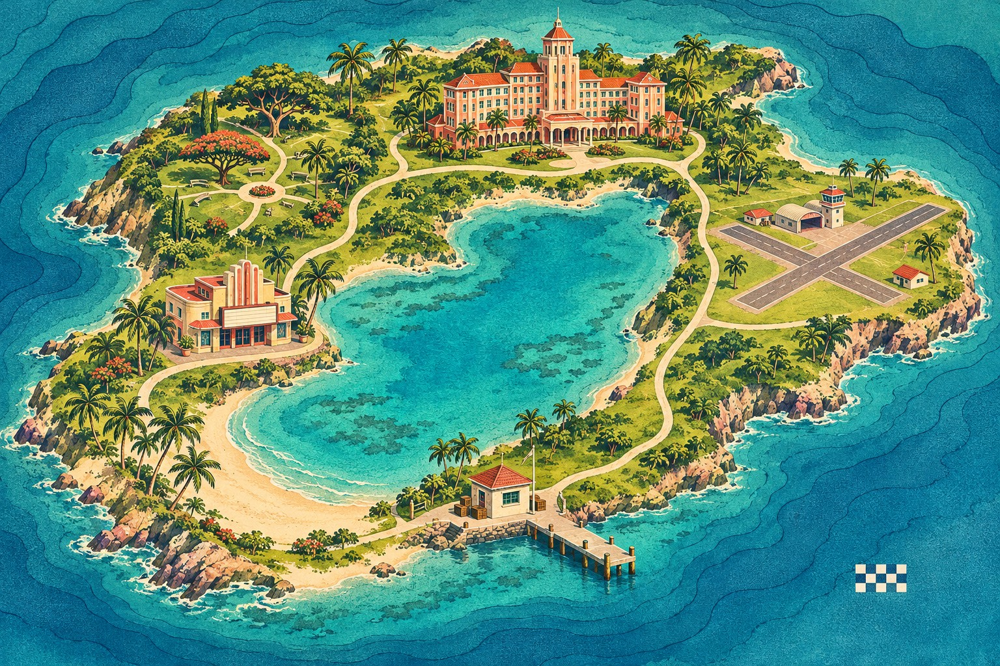

Visit Null Island
Where missing coordinates go on vacation.
0° N 0° E
Gulf of Guinea
Illustrated visitor’s map

Coordinate lab
Explore where the hotel guests land, click for coordinates, or plot your own point.
- Null Island / arrivals
- Other guest locations
- Plotted point
- Inspected location
Hotel 9999999999
Guest register
Something unexpected happened to your reservation.
Select a guest, choose coordinates, and use Plot point to save their location. Replace missing values with zero to see where guests without a saved location land.
| Guest | Original | Plotted | Status |
|---|
Guest records are fictional. The hotel name riffs on Esri’s 999999 error ↗